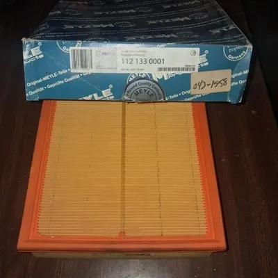
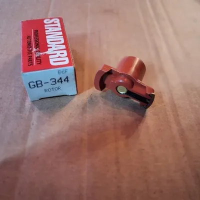
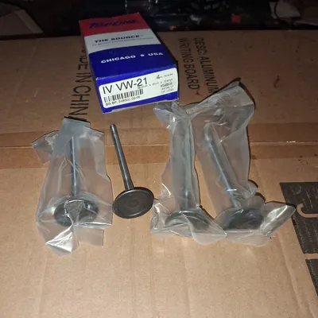
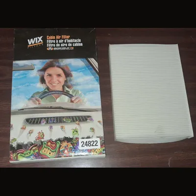

Ignition Points
1966-1979 KEM W8 Ignition Points Volkswagen Beetle Volvo 244 BMW 2002 2000 1800
W8
Fits 1971-1979 Volkswagen Beetle · 1971-1972 Volkswagen 411 (742 listed)
$21.99
View details30 parts whose listing names at least one Volkswagen vehicle, mostly engine parts, ignition & tune-up and air filters. Fit depends on year, model and engine, so check the full vehicle list on each part page or message us before you buy.
30 parts
Online checkout through Square. Ships from Carbondale, PA, or pick up by confirmed appointment only. Fitment question? Message us.
W8
Fits 1971-1979 Volkswagen Beetle · 1971-1972 Volkswagen 411 (742 listed)
$21.99
View details
W317
Fits 1995-2002 Volkswagen Cabrio · 1990-1998 Volkswagen Golf (134 listed)
$30.99
View details
350-234
Fits 2013-2014 Volkswagen Routan · 2006 Cadillac SRX (2678 listed)
$27.99
View details
W2037
Fits 1981-1998 Volkswagen Jetta · 1982-1988 Volkswagen Quantum (477 listed)
$12.99
View details
103-2250
Fits 1992-2000 Volkswagen Golf · 1995-2002 Volkswagen Cabrio (176 listed)
$24.99
View details
BD97064
Fits 1974-1981 Volkswagen Dasher · 1987-1993 Volkswagen Fox (687 listed)
$19.99
View details
17353
Fits 2014-2016 Volkswagen Saveiro · 1994-2001 Kia Sephia (8 listed)
$14.99
View details
H2108
Fits 1974-1978 Volkswagen Dasher · 1975-1979 Volkswagen Rabbit (3000 listed)
$12.99
View details
H5093
Fits 2016-2017 Volkswagen Crafter · 2015-2017 Volkswagen Crafter Van (795 listed)
$12.99
View details
H5774Q
Fits 2009-2014 Volkswagen Routan · 2004-2016 Chevrolet Tornado (28 listed)
$15.99
View details
H5825Q
Fits 2009-2012 Volkswagen Routan · 2008-2012 Dodge Grand Caravan (344 listed)
$13.99
View details
95017
Fits 1974-1980 Volkswagen Dasher · 1985-1998 Volkswagen Golf (316 listed)
$19.99
View details
01-10805S
Fits 1999-2005 Volkswagen Beetle · 2000-2006 Volkswagen Golf (227 listed)
$24.99
View details
33189
Fits 1999 Volkswagen Golf · 1985-1986 Chevrolet Astro (510 listed)
$15.99
View details
33208
Fits 1998-2006 Volkswagen Beetle (21 listed)
$14.99
View details
33209
Fits 1995-2002 Volkswagen Cabrio · 1985-1993 Volkswagen Cabriolet (440 listed)
$25.99
View details
780412
Fits 1955-1974 Volkswagen Karmann Ghia · 1971-1980 Volkswagen Super Beetle (178 listed)
$31.99
View details
112 133 0001
Fits 2002-2004 Volkswagen Passat · 1997-2001 Audi A4 (52 listed)
$16.99
View details
CV2470
Fits 1974-1981 Volkswagen Dasher · 1987-1993 Volkswagen Fox (405 listed)
$19.99
View details
3655
Fits 2009 Volkswagen Routan · 1993-1996 Chrysler Concorde (1559 listed)
$19.99
View details
61191
Fits 2007-2009 Volkswagen Pointer · 2005-2006 Audi A4 (30 listed)
$13.99
View details
61393
Fits 1998-2005 Volkswagen Beetle · 1999-2005 Volkswagen Golf (298 listed)
$12.99
View details
62472
Fits 1998-2010 Volkswagen Beetle · 1998-2006 Volkswagen Golf (331 listed)
$24.99
View details
03615
Fits 1980-1985 Volkswagen Jetta · 1979-1984 Volkswagen Rabbit (145 listed)
$23.99
View details
GB-344
Fits 1981-1984 Volkswagen Rabbit · 1975-1985 Volvo 244 (55 listed)
$17.99
View details
PS-226
Fits 1985-1999 Volkswagen Golf · 1982-1999 Volkswagen Jetta (286 listed)
$24.99
View details
VW-21
Fits 2006-2008 Volkswagen Jetta · 2006-2008 Volkswagen Rabbit (17 listed)
$44.99
View details
24822
Fits 1994-1998 Volkswagen Golf · 1994-1995 Volkswagen Jetta (61 listed)
$21.99
View details
42295
Fits 1998-2005 Volkswagen Passat · 1996-2004 Audi A4 (20 listed)
$29.99
View details
51342
Fits 1993-1996 Volkswagen Golf · 1993-1996 Volkswagen Jetta (4 listed)
$12.99
View details